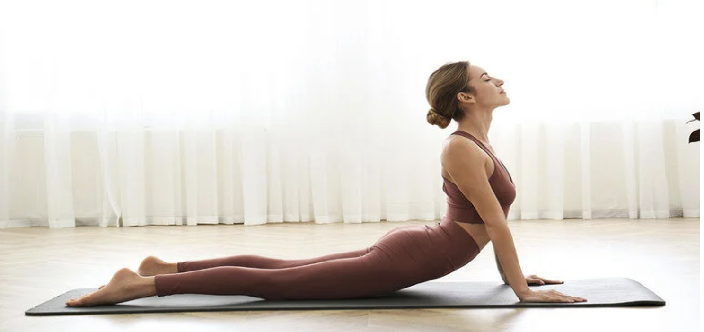

Kobra Pozu
Bu duruş sırt ve karın kaslarını güçlendirmek için çokça tercih ediliyor.
Oturarak Öne Eğilme Pozu
Sırt, bel ve arka bacak kaslarının esnemesini sağlayan bu poz, omuz ve omurların da gevşemesini sağlıyor.
İnek Pozu
Stres giderir, alt ve üst sırtı güçlendirir, karın iç organlarına masaj uygulanır, omurgadaki stres azaltılır.
Aşağı Bakan Köpek Pozu
En bilinen yoga pozisyonları içerisinde yaklaşık 3 dakika süren bu duruşta hareket için gerekli dayanak noktasını eller sağlar.